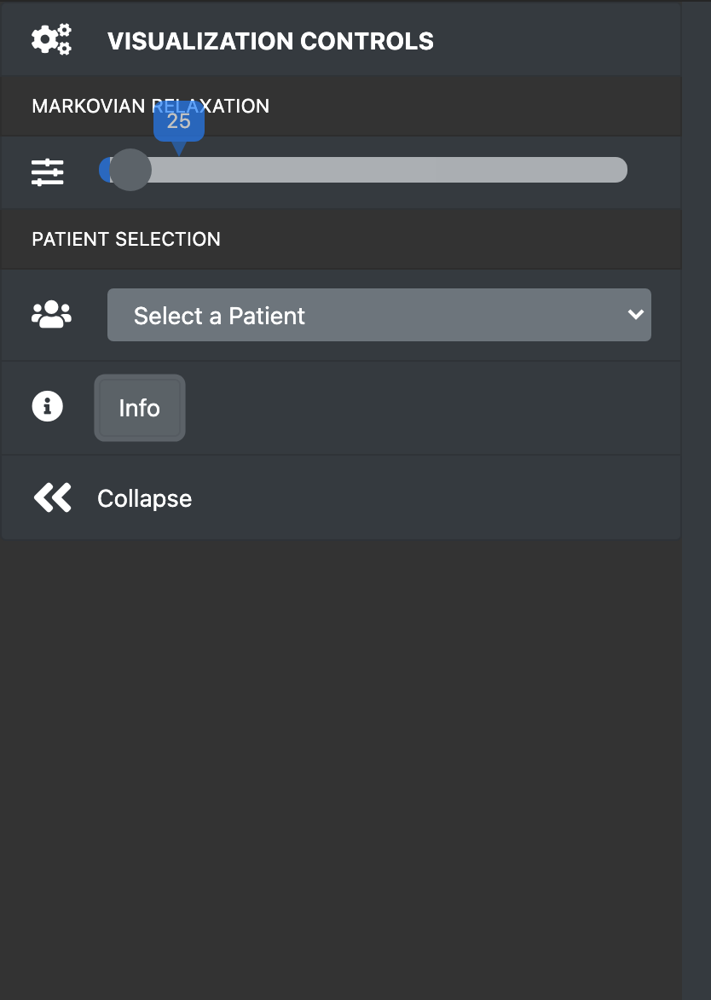
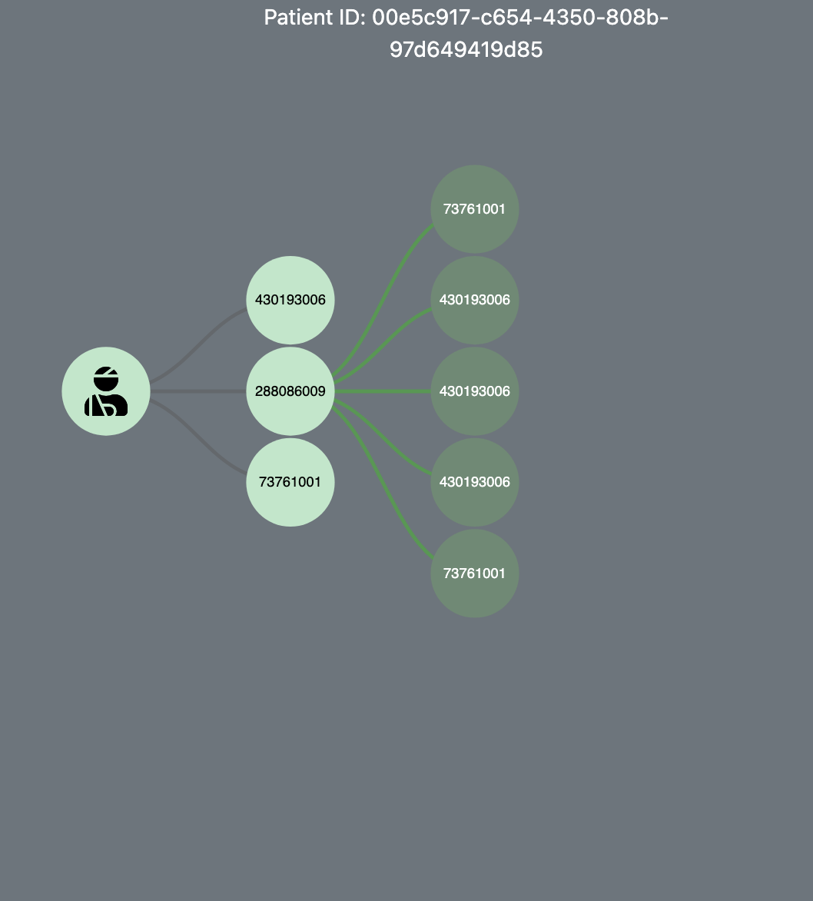

Visualization Controls
The Slider can be used to filter the graph
based on Markovian Relaxation.
Selecting a Patient Id from the Dropdown
menu opens up a hierarchical view of Patient's Epidodes of Care.

Patient Graph
The Source and Target Procedures for a
particular patient can be viewed here.
The colors on the edges signify the
risk associated with the transition from Source to the Target Procedure.